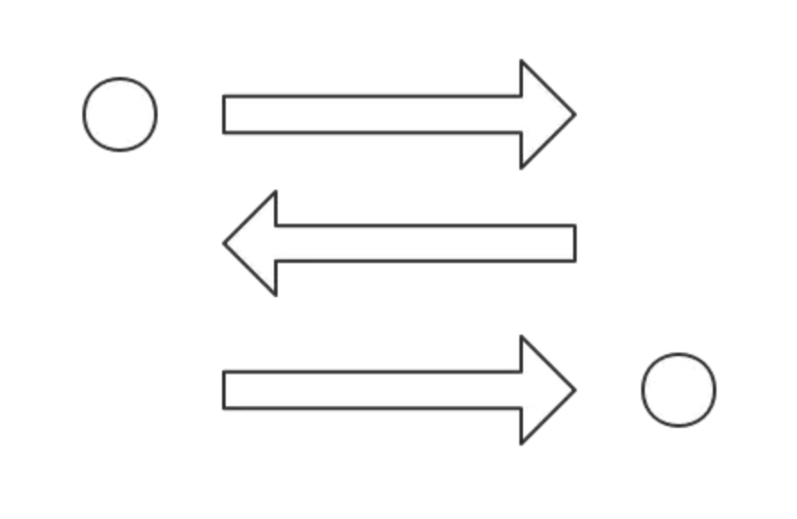

Record some CSS questions.
Describe float and how they work.
Float is a CSS positioning property. Floated elements remain a part of the flow of the page, and will affect the positioning of other elements, unlike position: absolute elements, which are removed from the flow of the page.
The CSS clear property can be used to be positioned below left/right/both floated elements.
If a parent element contains nothing but floated elements, its height will be collapsed to nothing. It can be fixed by clearing the float after the floated elements in the container but before the close of the container.
What are the various clearing techniques and which is appropriate for what context?
Empty div method -
<div style="clear:both;"></div>Clearfix method
1
2
3
4
5
6
7.clearfix:after {
content: ' ';
visibility: hidden;
display: block;
height: 0;
clear: both;
}overflow: auto or overflow: hidden method - Parent will establish a new block formatting context and expand to contains its floated children.
In projects, I would write a utility .clearfix class and use them in places where I need it. overflow: hidden might clip children if the children are taller than the parent and are not very ideal.
Describe z-index and how stacking context is formed.
The z-index property in CSS controls the vertical stacking order of elements that overlap.
z-index only effects elements that have a position value which is not static.
Without any z-index value, elements stack in the order that they appear in the DOM. Elements with non-static positioning will always appear on top of elements with default static positioning.
A stacking context is an element that contains a set of layers. Within a local stacking context, the z-index values of its children are set relative to that element rather than to the document root. If an element B sits on top of element A, a child element of element A, element C, can never be higher than element B even if element C has a higher z-index than element B.
Each stacking context is self-contained - after the element’s contents are stacked, the whole element is considered in the stacking order of the parent stacking context. A handful of CSS properties trigger a new stacking context, such as opacity less than 1, filter that is not none, and transform that is not none.
In addition to opacity, several newer CSS properties also create stacking contexts. These include transforms, filters, css-regions, paged media, and possibly others. As a general rule, it seems that if a CSS property requires rendering in an offscreen context, it must create a new stacking context.
Describe Block Formatting Context (BFC) and how it works.
A BFC is part of the visual CSS rendering of a web page in which block boxes are laid out. Floats, absolutely positioned elements, inline-blocks, table-cells, table-captions, and elements with overflow other than visible establish new block formatting contexts.
Without establishing a block formatting context, the containing box will not contain floated children.
A BFC is an HTML box that satisfies at least one of the following conditions:
- The value of float is not none.
- The value of position is absolute or fixed.
- The value of display is table-cell, table-caption, inline-block, flow-root(not supported by IE, iOS Safari), flex, or inline-flex, grid or inline-grid.
- The value of block element overflow is not visible.
In a BFC, each box’s left outer edge touches the left edge of the containing block. Vertical margins between adjacent block-level boxes in a BFC collapse.
Explain your understanding of the box model and how you would tell the browser in CSS to render your layout in different box models.
The CSS box model describes the rectangular boxes that are generated for elements in the document tree and laid out according to the visual formatting model. Each box has a content area and optional surrounding padding, border, and margin areas.
IE box model and W3C box model.
The CSS box model is responsible for calculating:
- How much space a block element takes up.
- Whether or not borders and/or margins overlap, or collapse.
- A box’s size.
The box model has the following rules: - The size of a block element is calculated by width, height, padding, borders, and margins.
- If no height is specified, a block element will be as high as the content it contains, plus padding.
- If no width is specified, a non-floated block element will expand to fit the width of its parent minus padding.
- The height of an element is calculated by the content’s height.
- The width of an element is calculated by the content’s width.
- By default, paddings and borders are not part of the width and height of an element.
What does * { box-sizing: border-box; } do?
By default, elements have box-sizing: content-box applied, and only the content size is being accounted for.box-sizing: border-box changes how the width and height of elements are being calculated, border and padding are also being included in the calculation.
- The height of an element is now calculated by the content’s height + vertical padding + vertical border width.
- The width of an element is now calculated by the content’s width + horizontal padding + horizontal border width.
Taking into account paddings and borders as part of our box model resonates better with how designers actually imagine content in grids.
What’s the difference between block, inline and inline-block?
| block | inline-block | inline | |
|---|---|---|---|
| Size | Fills up the width of its parent container. | Depends on content. | Depends on content. |
| Positioning | Start on a new line and tolerates no HTML elements next to it (except when you add float) | Flows along with other content and allows other elements beside it. | Flows along with other content and allows other elements beside it. |
| Can specify width and height | Yes | Yes | No. Will ignore if being set. |
| Can be aligned with vertical-align | No | Yes | Yes |
| Margins and paddings | All sides respected. | All sides respected. | Only horizontal sides respected. Vertical sides, if specified, do not affect layout. Vertical space it takes up depends on line-height, even though the border and padding appear visually around the content. |
| Float | - | - | Becomes like a block element where you can set vertical margins and paddings. |
What’s the difference between a relative, fixed, absolute and static positioned element?
- static - The default position; the element will flow into the page as it normally would. The top, right, bottom, left and z-index properties do not apply.
- relative - The element’s position is adjusted relative to itself, without changing layout.
- absolute - The element is removed from the flow of the page and positioned at a specified position relative to its closest positioned ancestor if any, or otherwise relative to the initial containing block. Absolutely positioned boxes can have margins, and they do not collapse with any other margins. These elements do not affect the position of other elements.
- fixed - The element is removed from the flow of the page and positioned at a specified position relative to the viewport and doesn’t move when scrolled.
- sticky - Sticky positioning is a hybrid of relative and fixed positioning. The element is treated as relative positioned until it crosses a specified threshold, at which point it is treated as fixed positioned.（IE not support）
Center
horizontal
- inline element:
text-align: center - block element has width:
margin: 0 auto display: flex;justify-content: center;
vertical
single line:
line-height = heightblock element has size:
1
2
3
4
5
6
7width: 80px;
height: 40px;
position: absolute;
left: 50%;
top: 50%;
margin-top: -20px;
margin-left: -40px;1
2
3
4
5
6position: absolute;
left: 0;
top: 0;
right: 0;
bottom: 0;
margin: auto;1
2
3
4
5width: 100px;
height: 100px;
position: absolute;;
top: calc(50% - 50px);
left: calc(50% - 50px);block element no size:
transform
1
2
3
4position: absolute;
left: 50%;
top: 50%;
transform: translate(-50%, -50%);table
1
2
3
4
5
6
7
8.parent {
display: table-cell;
text-align: center;
vertical-align: middle;
}
.child {
display: inline-block;
}flex
1
2
3
4
5.parent {
display: flex;
align-items: center;
justify-content: center;
}grid
1
2
3
4
5
6
7.parent {
display: grid;
}
.child {
align-self: center;
justify-self: center;
}
transition animation
transition:
- transition-property: none|all|property;
- transition-duration: time;
- transition-timing-function: linear|ease|ease-in|ease-out|ease-in-out|cubic-bezier(n,n,n,n);
- transition-delay: time;
animation / keyframes
- animation-name: keyframe name|none;
- animation-duration: time;
- animation-timing-function: linear|ease|ease-in|ease-out|ease-in-out|cubic-bezier(n,n,n,n);
- animation-delay: time;
- animation-iteration-count: n|infinite;
- animation-direction: normal|reverse|alternate|alternate-reverse
- animation-fill-mode: forwards|backwards|both
example
1 | div{ |
1 | div{ |
Difference between @import and <link>
@importis the CSS mechanism to include a style sheet and<link>the HTML mechanism, can define RSS, rel<link>load css when the page is loading,@importload after the page@importneed IE5+<link>can be added by JS
How do you serve your pages for feature-constrained browsers? What techniques/processes do you use?
- Graceful degradation - The practice of building an application for modern browsers while ensuring it remains functional in older browsers.
- Progressive enhancement - The practice of building an application for a base level of user experience, but adding functional enhancements when a browser supports it.
- Use caniuse.com to check for feature support.
- Autoprefixer for automatic vendor prefix insertion.
- Use CSS Feature queries @support
Explain CSS sprites, and how you would implement them on a page or site.
CSS sprites combine multiple images into one single larger image. It is a commonly-used technique for icons.
How to implement it:
- Use a sprite generator (webpack-spritesmith) that packs multiple images into one and generate the appropriate CSS for it.
- Each image would have a corresponding CSS class with background-image, background-position and background-size properties defined.
- To use that image, add the corresponding class to your element.
Advantages:
- Reduce the number of HTTP requests for multiple images. But with HTTP2, loading multiple images is no longer much of an issue.
- Advance downloading of assets that won’t be downloaded until needed, such as images that only appear upon :hover pseudo-states. Blinking wouldn’t be seen.
Alternatives:
- Data URIs (base64)
Data URIs allow you to embed the image data directly into a stylesheet. This avoids additional HTTP requests for images, making it essentially the same thing as a sprite, without the fancy positioning. - Icon Fonts
Icon fonts are similar to sprites in that they achieve the same thing: combining multiple images into a single request. - SVG
SVG images can be combined into a sprite as well and used as an icon system.
Are you familiar with styling SVG?
There are several ways to color shapes using inline CSS, an embedded CSS section, or an external CSS file.
Basic coloring can be done by setting two attributes on the node: fill and stroke. fill sets the color inside the object and stroke sets the color of the line drawn around the object. You can use the same CSS color naming schemes that you use in HTML, whether that’s color names (that is red), RGB values (that is rgb(255,0,0)), Hex values, RGBA values, etc.
1 | <rect x="10" y="10" width="100" height="100" stroke="blue" |
The above fill="purple" is an example of a presentational attribute. Presentational attributes can be overridden by CSS styles defined in a stylesheet. So, if you did something like svg { fill: blue; } it would override the purple fill we’ve defined.
Can you give an example of an @media property?
There are four types of @media properties:
- all - for all media type devices
- print - for printers
- speech - for screenreaders that “reads” the page out loud
- screen - for computer screens, tablets, smart-phones etc.
Here is an example of print media type’s usage:
1 | @media print and (mim-width: 300px) { |
What are the advantages/disadvantages of using CSS preprocessors?
Advantages:
- CSS is made more maintainable.
- Easy to write nested selectors.
- Variables for consistent theming. Can share theme files across different projects.
- Mixins to generate repeated CSS.
- Sass features like loops, lists, and maps can make configuration easier and less verbose.
- Splitting your code into multiple files. CSS files can be split up too but doing so will require an HTTP request to download each CSS file.
Disadvantages:
- Not writing currently and potentially usable CSS. For example, by using something like postcss-loader with webpack, you can write potentially future-compatible CSS, allowing you to use things like CSS variables instead of Sass variables. Thus, you’re learning new skills that could pay off if when they become standardized.
What is Sass?
Sass or Syntactically Awesome StyleSheets is a CSS preprocessor that adds power and elegance to the basic language. It allows you to use variables, nested rules, mixins, inline imports, and more, all with a fully CSS-compatible syntax. Sass helps keep large stylesheets well-organized, and get small stylesheets up and running quickly.
A CSS preprocessor is a scripting language that extends CSS by allowing developers to write code in one language and then compile it into CSS.
What is a Mixin and how to use?
A Mixin is a block of code that lets us group CSS declarations we may reuse throughout our site.
To define mixin:
1 | @mixin grid($flex: true /* default argument */) { |
To use a Mixin, we simply use @include followed by the name of the Mixin and a semi-colon.
1 | /* scss */ |
Describe pseudo-elements and discuss what they are used for.
A CSS pseudo-element is a keyword added to a selector that lets you style a specific part of the selected element. They can be used for decoration (:first-line, :first-letter) or adding elements to the markup (:before, :after combined with content: ...) without having to modify the markup. :first-line and :first-letter can be used to decorate the text. Used in the .clearfix hack as shown above to add a zero-space element with clear: both. Triangular arrows in tooltips use :before and :after.
1 | .left-ang{ |
How is responsive design different from adaptive design?
Both responsive and adaptive design attempt to optimize the user experience across different devices, adjusting for different viewport sizes, resolutions, usage contexts, control mechanisms, and so on.
- Responsive design works on the principle of flexibility - a single fluid website that can look good on any device. Responsive websites use media queries, flexible grids, and responsive images to create a user experience that flexes and changes based on a multitude of factors. Like a single ball growing or shrinking to fit through several different hoops.
- Adaptive design is more like the modern definition of progressive enhancement. Instead of one flexible design, adaptive design detects the device and other features and then provides the appropriate feature and layout based on a predefined set of viewport sizes and other characteristics. The site detects the type of device used and delivers the pre-set layout for that device. Instead of a single ball going through several different-sized hoops, you’d have several different balls to use depending on the hoop size.
Both have these methods have some issues that need to be weighed:
- Responsive design can be quite challenging, as you’re essentially using a single albeit responsive layout to fit all situations. How to set the media query breakpoints is one such challenge. Do you use standardized breakpoint values? Or, do you use breakpoints that make sense to your particular layout? What if that layout changes?
- Adaptive design generally requires user agent sniffing, or DPI detection, etc., all of which can prove unreliable.
Is there any reason you’d want to use translate() instead of absolute positioning?
translate() is a value of CSS transform. Changing transform or opacity does not trigger browser reflow or repaint but does trigger compositions; whereas changing the absolute positioning triggers reflow. transform causes the browser to create a GPU layer for the element but changing absolute positioning properties uses the CPU. Hence translate() is more efficient and will result in shorter paint times for smoother animations. When using translate(), the element still occupies its original space (sort of like position: relative), unlike in changing the absolute positioning.
What’s the difference between “resetting” and “normalizing” CSS? Which would you choose, and why?
- Resetting — is meant to strip all default browser styling on elements. E.g. margins, paddings, font-sizes of all elements are reset to be the same. You will have to redeclare styling for common typographic elements.
- Normalizing — preserves useful default styles rather than “unstyling” everything. It also corrects bugs for common browser dependencies.
It’s a good idea to choose resetting when you have very a customized or unconventional site design such that I need to do a lot of my own styling do not need any default styling to be preserved.
What is a Grid System in CSS?
A grid system is a structure that allows for content to be stacked both vertically and horizontally in a consistent and easily manageable fashion. Grid systems include two key components: rows and columns.
Some Grid Systems:
- Simple Grid
- Pure
- Flexbox Grid
- Bootstrap
- Foundation